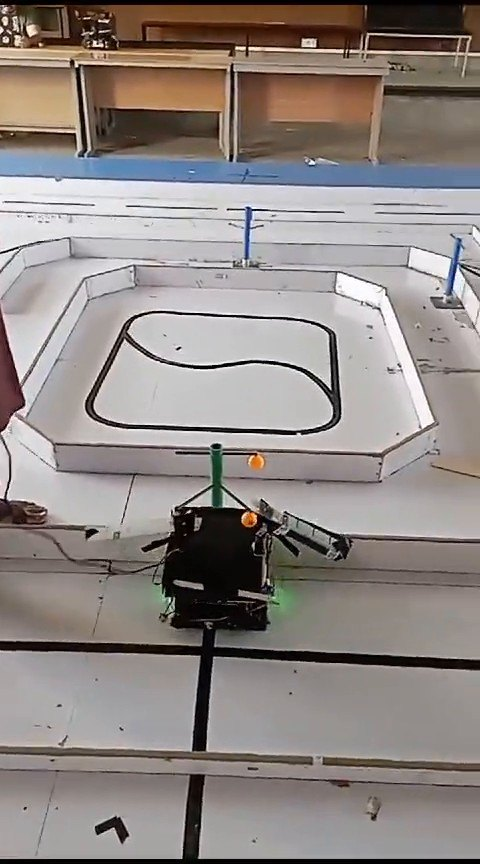
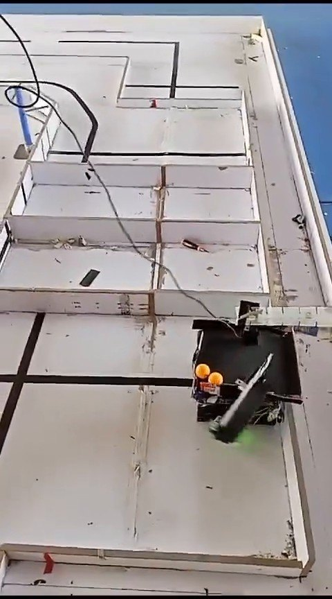

Autonomous Fruit-Plucking Robot
CodeAutonomous Robot Embedded C++ (Arduino)
An autonomous mobile robot that navigates an arena of black lines to reach "fruit trees" (poles holding orange balls as fruit). At each tree it lines itself up, checks the colour of the fruit on either side, collects it with servo-driven plucking arms, and returns to the main line to continue to the next tree.
It needs no external input during a run. Everything is driven by onboard sensing: a five-sensor IR array for line following, side IR sensors to centre on junctions, front limit switches to square up against the tree, and two TCS3200 colour sensors to check fruit ripeness.
Run sequence
Follow line → Count junctions → Centre & turn into tree branch → Drive to tree, square up → Check colour & pluck → Reverse to junction → Rejoin main line

1) Hardware
| Component | Role |
|---|---|
| Arduino Mega 2560 | Main controller: all sensing, decision logic and actuation |
| Differential drive + H-bridge | Four PWM channels (forward/reverse per side) with a hardware enable line |
| 5 × front IR line sensors | Line position (far-left, left, middle, right, far-right) and junction detection |
| 2 × side IR sensors | Detect when the robot's axle is centred over a junction |
| 2 × front limit switches | Contact with the tree, used to square the robot up against it |
| 2 × TCS3200 colour sensors | One per side, to check the colour of the fruit |
| 2 × servos | Open and close the plucking mechanism |
2) Navigation
Line following
- If the middle sensor loses the line, the robot steers back towards whichever side still sees it by driving the two wheels in opposite directions.
- When the middle, a left and a right sensor all see black at once, it registers a junction.
- Otherwise it drives straight, with separately tuned left and right motor speeds to compensate for the mismatch between the motors.
Precise junction handling
- Centring: after detecting a junction, the robot creeps forward, still correcting its line position, until both side sensors see the cross-line. This puts the axle exactly on the junction.
- Sensor-terminated turns: instead of timed turns, the robot spins in place until the middle sensor picks up the new line. This makes turns repeatable regardless of battery level.
3) Mission Logic
The arena layout is encoded as a junction counter. At the junctions that lead to trees (the 2nd, 4th and final junctions), the robot runs a plucking routine:
- Centre on the junction and turn into the branch leading to the tree.
- Approach the tree, line-following slowly until a front limit switch closes. If only one switch is pressed, it drives only the opposite wheel until the second switch closes, so the robot ends up square to the tree.
- Check the fruit colour on the left and right sides, then operate the servo plucking mechanism.
- Reverse with line correction until the side sensors find the junction again, then turn back onto the main line.
After the final tree, the robot reverses out of the branch and stops, ending the run.
4) Fruit Detection
Each TCS3200 colour sensor has red, green and blue photodiode filters that are selected with its S2/S3 pins. Its output is a square wave whose pulse width gets shorter as that colour gets stronger. The robot sets the output to 20% frequency scaling, measures the pulse width under each filter, and compares red with green:
Both sides are read at every tree, so the robot can judge the fruit on its left and right independently.
